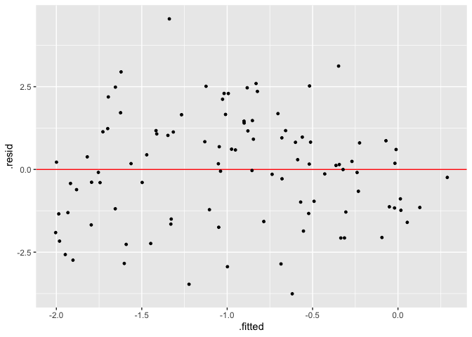
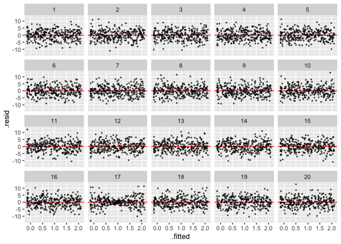

The goal of visage is to provide an lightweight OOP system and a set of tools for running visual inference experiments.
Installation
And the development version from GitHub with:
# install.packages("devtools")
devtools::install_github("TengMCing/visage")Usage of visual inference cubic linear model class CUBIC_MODEL
Define a model
A visual inference cubic linear model is defined as:
CUBIC_MODEL$formula
#> y ~ 1 + (2 - c) * x + c * z + a * (((2 - c) * x)^2 + (c * z)^2) +
#> b * (((2 - c) * x)^3 + (c * z)^3) + ewhere x and z are random variables, a, b and c are parameters and e is the random error term.
cubic_model() is a cubic model class constructor, which takes arguments a, b, c, sigma, x and z, where the first four are numeric values defined above, and x and z are random variable instances created by the random variable abstract base class constructor rand_var(). If we would like x and z to be uniform random variables ranged from −1 to 1, it can be achieved by using the uniform random variable class constructor rand_uniform(). It only takes two arguments which are the lower bound and the upper bound of the support.
mod <- cubic_model(a = -3, b = -3, c = 1, sigma = 1,
x = rand_uniform(-1, 1), z = rand_uniform(-1, 1))
mod
#>
#> ── <CUBIC_MODEL object>
#> y = 1 + (2 - c) * x + c * z + a * (((2 - c) * x)^2 + (c * z)^2) + b * (((2 - c) * x)^3 + (c * z)^3) + e
#> - x: <RAND_UNIFORM object>
#> [a: -1, b: 1]
#> - z: <RAND_UNIFORM object>
#> [a: -1, b: 1]
#> - e: <RAND_NORMAL object>
#> [mu: 0, sigma: 1]
#> - a: -3
#> - b: -3
#> - c: 1
#> - sigma: 1Generate random values from the model
An instance of cubic model class contains methods of simulating data and making residual plot. Method gen() returns a data frame containing realizations of x, z, y and e simulated from the model. The number of realizations depends on the integer argument n. In addition, a null model will be fitted using the simulated data and residuals and fitted values will be included in the returned data frame.
The null model is defined as:
CUBIC_MODEL$null_formula
#> y ~ x + zGenerates five realizations from the model:
mod$gen(n = 5)
#> y x z e .resid .fitted
#> 1 -2.5621020 -0.3476054 0.8475984 0.15646247 -2.90677143 0.3446694
#> 2 2.1990206 0.3198613 0.4183419 1.61059928 2.62107004 -0.4220495
#> 3 1.5425117 -0.3151661 0.1119863 0.99160041 2.03352425 -0.4910126
#> 4 -3.5235881 0.7316370 -0.6738118 -1.35632540 -1.70434833 -1.8192398
#> 5 -0.1806606 -0.8987716 0.2039230 -0.09030404 -0.04347452 -0.1371861Make a residual plot
Method plot() produce a ggplot object. It takes a data frame containing columns .resid and .fitted as input, along with a character argument type indicating the type of the data plot, and other aesthetic arguments such as size and alpha to control the appearance of the plot.
mod$plot(mod$gen(n = 100), type = "resid", size = 1)
Make a lineup
A lineup is a matrix of residual plots which can be produced by using the methods gen_lineup() and plot_lineup(). Method gen_lineup() takes the number of realizations n and the number of plots in a lineup k as inputs. Other than that, the method plot_lineup() has the same user interface as plot().
Generate a lineup consists of 2 plots and 8 realizations:
mod$gen_lineup(n = 8, k = 2)
#> y x z e .resid .fitted
#> 1 -0.4973043 -0.40740908 0.17120611 -0.86303321 -0.23514518 -0.26215909
#> 2 1.4316413 -0.57762631 0.02860045 1.40596898 1.74088715 -0.30924584
#> 3 -0.5146353 -0.08420377 -0.82643980 -0.22888571 -0.36522629 -0.14940901
#> 4 1.2216060 -0.68948205 0.27767304 1.37179688 1.56810244 -0.34649641
#> 5 -0.3388120 -0.99091806 -0.16304338 -0.09135055 0.08760691 -0.42641887
#> 6 0.9238849 0.50569156 0.03780961 0.53995878 0.91692254 0.00696235
#> 7 -0.7516302 0.74413867 -0.50218944 1.28046584 -0.83816736 0.08653719
#> 8 -3.2468076 -0.76767521 0.41325250 -2.75758458 -2.87498020 -0.37182739
#> 9 -0.5147136 -0.40740908 0.17120611 -0.86303321 -0.25255456 -0.26215909
#> 10 -2.6493338 -0.57762631 0.02860045 1.40596898 -2.34008795 -0.30924584
#> 11 -0.9437314 -0.08420377 -0.82643980 -0.22888571 -0.79432241 -0.14940901
#> 12 0.5426231 -0.68948205 0.27767304 1.37179688 0.88911952 -0.34649641
#> 13 0.4347612 -0.99091806 -0.16304338 -0.09135055 0.86118004 -0.42641887
#> 14 -1.5139160 0.50569156 0.03780961 0.53995878 -1.52087839 0.00696235
#> 15 2.1621762 0.74413867 -0.50218944 1.28046584 2.07563904 0.08653719
#> 16 0.7100773 -0.76767521 0.41325250 -2.75758458 1.08190471 -0.37182739
#> test_name statistic p_value k null
#> 1 F-test 6.3395363 0.2884739 1 FALSE
#> 2 F-test 6.3395363 0.2884739 1 FALSE
#> 3 F-test 6.3395363 0.2884739 1 FALSE
#> 4 F-test 6.3395363 0.2884739 1 FALSE
#> 5 F-test 6.3395363 0.2884739 1 FALSE
#> 6 F-test 6.3395363 0.2884739 1 FALSE
#> 7 F-test 6.3395363 0.2884739 1 FALSE
#> 8 F-test 6.3395363 0.2884739 1 FALSE
#> 9 F-test 0.8367481 0.6642758 2 TRUE
#> 10 F-test 0.8367481 0.6642758 2 TRUE
#> 11 F-test 0.8367481 0.6642758 2 TRUE
#> 12 F-test 0.8367481 0.6642758 2 TRUE
#> 13 F-test 0.8367481 0.6642758 2 TRUE
#> 14 F-test 0.8367481 0.6642758 2 TRUE
#> 15 F-test 0.8367481 0.6642758 2 TRUE
#> 16 F-test 0.8367481 0.6642758 2 TRUEPlot a lineup consists of 20 plots and 300 realizations:
mod$plot_lineup(mod$gen_lineup(n = 300, k = 20), type = "resid", alpha = 0.6)
Usage of visual inference heteroskedasticity linear model class HETER_MODEL
A visual inference heteroskedasticity linear model is defined as:
HETER_MODEL$formula
#> y ~ 1 + x + sqrt(1 + (2 - abs(a)) * (x - a)^2 * b) * ewhere x is random variables, a, b are parameters and e is the random error term.
Similar to the cubic model, the heteroskedasticity model could be built by the heteroskedasticity model class constructor heter_model(). This function takes three arguments as inputs, which are a, b and x. a and b are numeric parameters defined above. x needs to be a random variable object.
mod <- heter_model(a = 0, b = 16, x = rand_uniform(-1, 1))
mod
#>
#> ── <HETER_MODEL object>
#> y = 1 + x + sqrt(1 + (2 - abs(a)) * (x - a)^2 * b) * e
#> - x: <RAND_UNIFORM object>
#> [a: -1, b: 1]
#> - e: <RAND_NORMAL object>
#> [mu: 0, sigma: 1]
#> - a: 0
#> - b: 16Since both the cubic model class CUBIC_MODEL and the heteroskedasticity model class HETER_MODEL are inherited from the visual inference model class VI_MODEL, heteroskedasticity model object can be used in a similar way as cubic model object. The following codes give examples of the use of the object.
mod$gen(n = 5)
#> y x e .resid .fitted
#> 1 1.3753040 -0.43952948 0.3040517 -1.0713760 2.4466800
#> 2 -0.2426187 0.17868480 -0.9996041 -1.1063884 0.8637697
#> 3 0.7306202 0.01600313 -0.2842206 -0.5496887 1.2803089
#> 4 3.1466397 -0.06465749 2.0767438 1.6598029 1.4868368
#> 5 2.7656728 -0.14713727 1.4701836 1.0676501 1.6980227
mod$plot(mod$gen(n = 300), type = "resid", size = 1)
mod$plot_lineup(mod$gen_lineup(n = 300), alpha = 0.6)
Usage of closed form expression CLOSED_FORM
Define and evaluate a closed form expression
“Closed form expression” is defined as a special type of R expression that can replace random variables in the expression with their realizations before evaluation. This may sound confusing, so let’s look at some examples.
closed_form() is the closed form expression constructor, which takes only one arguments expr required to be a formula. Considering the simplest case first, where the expression contains zero random variables, such as 1 + 3. It can be evaluated using the method compute() directly as a typical R expression.
cf <- closed_form(~1 + 3)
cf
#>
#> ── <CLOSED_FORM object>
#> EXPR = 1 + 3
cf$compute()
#> [1] 4However, if the closed form expression contains any random variables, it can not be evaluated directly since the values of random variables are unknown. In the following example, x is a uniform random variable ranged from -1 to 1, and x + 1 is an expression that can not be evaluated by method compute().
x <- rand_uniform(-1, 1)
cf <- closed_form(~1 + x)In this case, the gen() method will try to generate n realizations from random variables, then evaluate the expression. In addition, if rhs_val = TRUE, realizations generated from random variables will be returned.
cf$gen(n = 5, rhs_val = TRUE)
#> $lhs
#> [1] 0.4560498 0.3097489 1.4528605 1.5291460 1.2054545
#>
#> $rhs
#> $rhs$x
#> [1] -0.5439502 -0.6902511 0.4528605 0.5291460 0.2054545Nested closed form expression
Nested closed form expression is useful when a hierarchical structure present in the expression.
Consider the following statistical model:
y = x + e, where x is a uniform random variable ranged from -1 to 1, and e = 1 + x^2 * z, where z is a standard normal random variable.
We can define this model using the following code:
z <- rand_normal(mu = 0, sigma = 1)
x <- rand_uniform(-1, 1)
e <- closed_form(~1 + x^2 * z)
y <- closed_form(~x + e)
y
#>
#> ── <CLOSED_FORM object>
#> EXPR = x + e
#> - x: <RAND_UNIFORM object>
#> [a: -1, b: 1]
#> - e: <CLOSED_FORM object>
#> EXPR = 1 + x^2 * z
#> - x: <RAND_UNIFORM object>
#> [a: -1, b: 1]
#> - z: <RAND_NORMAL object>
#> [mu: 0, sigma: 1]Note that y depends on e and e itself is a closed form expression. Both y and e depend on x. The method gen() will return values of x, z and e if rhs_val = TRUE.
y$gen(n = 5, rhs_val = TRUE)
#> $lhs
#> [1] -0.7874509 0.8231533 0.5564655 0.7688928 2.4329829
#>
#> $rhs
#> $rhs$x
#> [1] -0.7382575 -0.1465141 -0.8590129 -0.2228402 0.9989473
#>
#> $rhs$z
#> [1] -1.9250401 -1.4130287 0.5630528 -0.1664784 0.4349508
#>
#> $rhs$e
#> [1] -0.0491934 0.9696674 1.4154784 0.9917331 1.4340356Turn gen() result into dataframe via method as_dataframe()
Results of gen() is either a vector or a list, which can be converted into a dataframe via method as_dataframe(). The lhs argument is for naming the left hand side result of the closed form expression.
y$as_dataframe(y$gen(n = 5), lhs = "y")
#> y
#> 1 0.4716721
#> 2 -0.6373378
#> 3 1.6216489
#> 4 0.9646769
#> 5 0.8528191Current limitiation of CLOSED_FORM
For closed_form(), any simple expressions can be provided, as long as all the symbols exist in the current environment. Note that this function tries to evaluate ALL the atomic symbols in the expression during initialization, and store the values in the object. Hence, calls like a$b will also be decomposed as $, a and b, where b will be interpreted as a variable b exists in the current environment. Therefore, use ~a[["b"]] instead of ~a$b. And pre-define function like myfun = function() 1, then use it in the expression ~myfun().
Basic usgae of visage OOP system
Define a new class
A class can be defined with the new_class function. All positional arguments are for specifying parent classes, BASE is the base object class provided by the package, you don’t need to manually specify it. But if you would like to have advanced behaviour, you can try to implement your own object class.
Class name is mandatory and should be unique.
# You don't actually need to specify BASE here. This is only for demonstration.
DEMO <- new_class(BASE, class_name = "DEMO")
DEMO
#>
#> ── <DEMO class>The object is an environment containing some useful attributes and methods.
-
OBJECT$..type..gives the current class name. -
OBJECT$..class..gives the current class name and parent class names.
DEMO$..type..
#> [1] "DEMO"
DEMO$..class..
#> [1] "DEMO" "BASE"-
OBJECT$..dict..()returns all names of attribute and method of the object. -
OBJECT$..methods..()returns all names of method of the object
DEMO$..dict..()
#> [1] "..dict.." "..str.." "..len.." "..class.."
#> [5] "..new.." "..repr.." "has_attr" "instantiation"
#> [9] "set_attr" "..type.." "get_attr" "..methods.."
#> [13] "..method_env.." "..instantiated.." "..init.."
DEMO$..methods..()
#> [1] "..dict.." "..str.." "..len.." "..new.."
#> [5] "..repr.." "has_attr" "instantiation" "set_attr"
#> [9] "get_attr" "..methods.." "..init.."-
OBJECT$..str..()returns a string representation of the object, which will be used by the S3print()method. This method usually needs to be overridden in subclass to give short summary of the object.
DEMO$..str..()
#> [1] "<DEMO class>"Register a method for the class
Methods can be registered by using register_method(). The first argument is the object you want to bind the function to, the rest of the positional arguments are for specifying method names and functions. The syntax is method_name = function.
You can choose to write inline function or pass pre-defined function. The associative environment of the function doesn’t matter, it will be modified by the register_method() function.
pre_defined_fn <- function() 1 + 2
register_method(DEMO, inline_fn = function() 1 + 1, pre_defined_fn = pre_defined_fn)
DEMO$inline_fn()
#> [1] 2
DEMO$pre_defined_fn()
#> [1] 3For method that needs to access the object itself, just simply use self in your method. It is an reference to the object.
DEMO$val <- 5
register_method(DEMO, get_val = function() self$val)
DEMO$get_val()
#> [1] 5Override the ..init..() method
..init..() method is for instance initialization. To override the ..init..() method, you need to use the register_method() to register it again.
init <- function(first_name, employee_id) {
self$first_name <- first_name
self$employee_id <- employee_id
}
register_method(DEMO, ..init.. = init)Now the class requires two two arguments first_name and employee_id to initialize the instance.
Build an instance
To new and initialize an instance, you need to use the instantiation() method. The output will show it is an object.
mike <- DEMO$instantiation("Mike", 25)
mike
#>
#> ── <DEMO object>first_name and employee_id are stored in the object because of the ..init..() method.
mike$first_name
#> [1] "Mike"
mike$employee_id
#> [1] 25A complete workflow
It is recommend to write your class definition in a function to make debugging easier. The following example new a class DEMO_2, defines its own ..init..() method, defines a get_email() function for retrieving the email address, defines its own ..str..() method such that when we print the object, it will provide us with a nicely formatted summary.
use_method is used to run methods from other classes, which in this case, the ..str..() method from the BASE class.
class_DEMO_2 <- function(env = new.env(parent = parent.frame())) {
new_class(env = env, class_name = "DEMO_2")
init_ <- function(first_name, employee_id) {
self$first_name <- first_name
self$employee_id <- employee_id
}
get_email_ <- function() {
paste0(self$first_name, "_", self$employee_id, "@company.com")
}
str_ <- function() {
paste(use_method(self, BASE$..str..)(),
paste("Name:", self$first_name,
"\nEmployee ID:", self$employee_id,
"\nEmail:", self$get_email()),
sep = "\n")
}
register_method(env,
..init.. = init_,
get_email = get_email_,
..str.. = str_)
return(env)
}
DEMO_2 <- class_DEMO_2()
mike <- DEMO_2$instantiation("Mike", 25)
mike$get_email()
#> [1] "Mike_25@company.com"
mike$..str..()
#> [1] "<DEMO_2 object>\nName: Mike \nEmployee ID: 25 \nEmail: Mike_25@company.com"
mike
#>
#> ── <DEMO_2 object>
#> Name: Mike
#> Employee ID: 25
#> Email: Mike_25@company.com